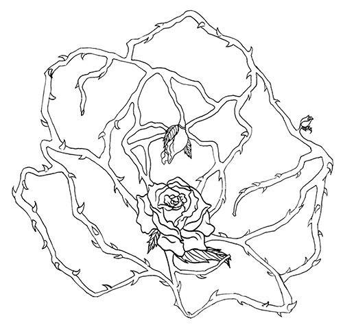

Graphic Design 1

I know I used to be a happy little kid with no worries and had huge dreams and potential, which is portrayed as a blossomed rose in the middle. Due to drastic changes in my life, I tend to protect myself and keep things to myself. However in reality, I cannot always do that and need to go on with life as if I haven't been through the experiences. So I drew the stems and thorns as an outline of a bigger rose that imitates the shape of the small blossomed rose. The stems are around the blossomed rose in the middle to show that I try to embrace the changes I've had whether they're good or bad experiences. The reason why there are a few rose buds growing from the protective stems is to show that good or beneficial things can come out of bad experiences.